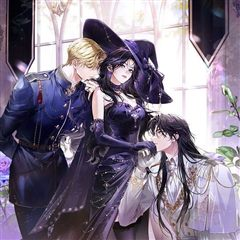
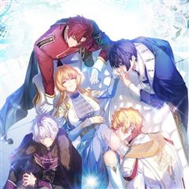
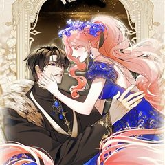
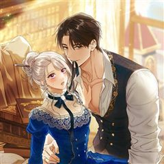

녹음의 관 같은 웹툰 추천

녹음의 관 · 삵 / 김은혜 / 비누 / 시야
녹음의 관 재밌게 봤다면 이 웹툰들도 좋아할 거예요. 같은 장르이면서 빙의, 로판 같은 요소가 겹치는 작품을, 겹치는 요소가 많은 순서로 20개 골랐어요.
2026-10-11 기준 · 네이버웹툰·카카오웹툰·레진코믹스 · 성인 작품 제외
내 취향으로 직접 골라 추천받기 →-
1
 카카오웹툰
카카오웹툰남편을 내 편으로 만드는 방법
판타지 소설 속 남편의 손에 죽는 악역 조연, ‘루드베키아’가 되었다. 이 세계의 망할 아버지는 내 정략결혼 상대를 또 물어왔다. 문제는 그 상대가 바로 날 죽이게 될 남편이라는 것! 일단은 살길을 찾아야 한다. 북부 사람들에게 최대한 무해하게 보이…
빙의로판로맨스카카오웹툰에서 보기 → · 남편을 내 편으로 만드는 방법 같은 웹툰 → -
2
 카카오웹툰
카카오웹툰악역의 엔딩은 죽음뿐
역하렘 공략 게임의 악역, 에카르트 공작가의 하나뿐인 공녀이자 입양아 페넬로페로 빙의했다. 그런데 하필 난이도는 극악! 뭘 해도 엔딩은 죽음뿐! ‘진짜 공녀’가 나타나기 전에 여주의 어장 중 한 명을 공략해서 살아남아야 한다. 사사건건 시비를 거는…
빙의로판로맨스카카오웹툰에서 보기 → · 악역의 엔딩은 죽음뿐 같은 웹툰 → -
3
 카카오웹툰
카카오웹툰빙의자를 위한 특혜
※사후 세계를 대비하세요! 죽기 직전에 받은 이상한 스팸문자. 죽은 줄 알고 눈떠보니 빙의심사국이다. 정말 사후 세계가 있다고? 책 속으로 빙의될 거라고? "특별히 선호하는 장르가 있으신가요?" 전생에 덕질로 모든 장르를 섭렵한 나.…
빙의로판로맨스카카오웹툰에서 보기 → · 빙의자를 위한 특혜 같은 웹툰 → -
4
 카카오웹툰
카카오웹툰악녀라서 편하고 좋은데요?
"악녀라서 뭐? 편하고 좋기만 한데?" 2020년 카카오페이지 올해의 웹소설 <악녀라서 편하고 좋은데요?> 웹툰으로 화려하게 다시 태어나다! 은수저X, 금수저X :+: 오리하르콘 수저 :+: 악녀로 빙의한 윤도희 180,000,000도 인생 역전에…
빙의로판로맨스카카오웹툰에서 보기 → · 악녀라서 편하고 좋은데요? 같은 웹툰 → -
5
 카카오웹툰
카카오웹툰남주의 입양딸이 되었습니다
"아이를 입양한다” 어느 날 갑자기 떨어진 북부의 주인 보레오티의 폭탄 발언. 그리고 기적처럼 만난 “검은색”을 지닌 아이. 그런데… “근☆육이 제일 좋아~ ☆불끈불끈☆ 모여라~ ٩(๑˃́ꇴ˂̀๑)۶” “이두근 (ง˙∇˙)ว, 삼두근 (ง˙∇˙) ง…
빙의로판로맨스카카오웹툰에서 보기 → · 남주의 입양딸이 되었습니다 같은 웹툰 → -
6
 카카오웹툰
카카오웹툰악녀는 오늘도 즐겁다
남친을 빼앗아간 친구가 웃으며 청첩장을? 하! 시원하게 사이다를 날려주고 돌아와 잠들었는데… 깨어나니 미모, 재산, 지능 모든 걸 다 갖춘 로판 속 악녀로 빙의했다. 언니한테 부족한 건 남자 보는 눈뿐이에요. 쓰레기 같은 황태자는 여주 한테 버려버리…
빙의로판로맨스카카오웹툰에서 보기 → · 악녀는 오늘도 즐겁다 같은 웹툰 → -
7
 카카오웹툰
카카오웹툰신데렐라를 곱게 키웠습니다
유명한 동화가 있다. 아버지와 새어머니가 결혼해 언니들까지 다섯 명의 대가족이 된 마음씨 착한 아가씨. 아버지가 돌아가신 뒤 마음씨 고약한 새어머니와 언니들 밑에서 구박받는 불쌍한 그녀. 바로 그 동화, 신데렐라에 빙의했다. 그런데 하필이면 신데렐라…
빙의로판로맨스카카오웹툰에서 보기 → · 신데렐라를 곱게 키웠습니다 같은 웹툰 → -
8
 카카오웹툰
카카오웹툰입양딸 역할을 지나치게 잘해버렸다
책 속에 처음 들어왔을 때 나는 그냥 살아남는 것이 목표였다. 최대한 가늘고! 길고! 행복하게! 그래서 아등바등 최선을 다해 살았다. 슬슬 독립해서 꽃길을 걸어보려 했는데. “어딜 가더라도 주인님 옆자리는 내 거예요. 평생 내 머리 쓰다듬어주기로 약…
빙의로판로맨스카카오웹툰에서 보기 → -
9
 카카오웹툰
카카오웹툰S급 헌터는 악역 공녀가 되기 싫습니다
김이영, 그녀는 대한민국의 평범한 공무원 시험 응시생이었다. 그것도 4년 반이 넘는 긴 시간동안 공부 끝에 합격한, 낙이라고는 짬짬이 소설읽는 것밖에 없는 정말 평범한 사람. 그러나 합격을 축하하기 위해 외식을 나간 날 교통사고를 당해 죽고, 자신이…
빙의로판로맨스카카오웹툰에서 보기 → -
10카카오웹툰
악마의 주인님이 되어버렸다
피폐소설 속 남주를 흑화하게 만든 악녀로 빙의했다. 이미 N번의 빙의를 말아먹었던 나는 결심했다. 지하실에 갇힌 남주를 구하고 탈출하겠다고. “내가 지켜줄게." 드디어 남주의 정체가 밝혀지고 해피엔딩이 눈앞이었다. 학대는 무슨, 손수 먹이고 입혀 가…
빙의로판로맨스카카오웹툰에서 보기 → -
11

카카오웹툰마론 후작
하필이면 곧 죽을 운명인 희대의 악녀, 헤일리의 몸에 빙의했다. 빙의에 적응하기도 전에 협곡 아래 오염된 지역에 버려지고 말았다. '명색이 빙의자인데!' 하지만 죽으라는 법은 없었는지 “알겠냐? 이미 지나간 과거에 집착해서 화를 내다보면 내일의 일을…
빙의로판로맨스카카오웹툰에서 보기 → -
12

카카오웹툰가짜 성녀인데 신들이 집착한다
5년 뒤, 진짜 성녀가 나타나면 죽게 될 가짜 성녀에게 빙의했다. 성녀에게 떨어지는 월급만 모아도 최소 건물주! 그래서 적당히 성녀 연기를 하다가 도망칠 계획을 세우고 있었는데… "나를 선택해라, 그렇지 않으면…" "당신만을 위한 감옥을 준비했습니다…
빙의로판로맨스카카오웹툰에서 보기 → -
13
 카카오웹툰
카카오웹툰망할 가문을 살려보겠습니다
구성작가로 치열하게 살아가던 나 지연우는 비명횡사 후 동료작가가 재미로 쓴 소설 [오시리아 연대기]에 빙의하고 만다. 그것도 몇 장 나오지 않았던 엘리어스 가문의 다섯째 딸, 고도비만 준 히키코모리 영애인 태라 엘리어스로. 산넘어 산이라고 이 가문은…
빙의로판로맨스카카오웹툰에서 보기 → -
14카카오웹툰
전남편이 남주가 된 것에 관하여
남편의 반란이 실패하며 함께 처형당한 래나 코넬리. 평소 즐겨읽던 소설 속 엑스트라 마법사, '아샤 블리스'에 빙의된다. 원작의 심기를 거스르지 않고 쥐죽은 듯 살고 있던 어느 날, 카르한 제국 최고의 권력자이자 소설 속 남자주인공 '칼리고 에투스'…
빙의로판로맨스카카오웹툰에서 보기 → -
15
 네이버웹툰
네이버웹툰피폐물을 힐링물로 만드는 방법
[살아생전 즐겨보던 소설에 환생했다.] 너무 진부하다구요? 아닐 걸요! 왜냐면 그 소설이... 19금 피폐물이거든요...! ̗̀(ꀬ⏖ꀬ∴) 예쁘고 상냥한 여주인공의 동생으로 환생했지만, 언니의 새드엔딩을 지켜볼 수 없었던 레나티스는 언니 대신 잘생긴…
빙의로판로맨스네이버웹툰에서 보기 → -
16
 네이버웹툰
네이버웹툰남편은 한 명으로 족하다
<모든 사람들이 나를 사랑하면 사는 게 재밌을 줄 알았다> 평범한 회사원이 로맨스 판타지 게임의 매력 수치 999 백작 영애 '크로체타'에 빙의했다. 사람들이 눈만 마주치면 자신에게 반해서 달려드는 환장할 상황. 크로체타는 '남자 주인공'을 공략하여…
빙의로판로맨스네이버웹툰에서 보기 → -
17

카카오웹툰마음이 이끄는 대로
왕과 국혼을 앞두고 물가에 몸을 던진 공작가의 딸 헤일리에 빙의한 이재. 그런데 왕의 등 뒤로 보여선 안될 원혼들이 보인다! 국왕 로더릭에게 몰려드는 원혼들을 퇴마하려 고군분투하는 날이 이어진다. 로더릭은 이재와 함께 있으면서 맑아지는 정신과 신체…
빙의로판로맨스카카오웹툰에서 보기 → -
18

카카오웹툰악녀의 맞선남이 너무 완벽하다
소문난 악녀 '이본 아젠트호즈'에 빙의 했다! 원작에서는 남주와 맺어진 여주를 질투하다가 비극적 최후를 맞은 악녀였지만, 빙의 후 이본은 평화롭게 다이아 수저의 삶을 즐기기로 다짐한다. 하지만 소설과 전개가 달라지는데?! “이본의 .. 어장이라면,…
빙의로판로맨스카카오웹툰에서 보기 → -
19카카오웹툰
감금물의 하녀로 살아가기
대한민국의 평범한 회사원이던 나, '유정인'. 교통사고를 당하고 눈을 떠보니 왕자를 탑에 가두고 유린한 하녀 '로제'가 되어 있었다. 왕자가 성 밖으로 나가는 순간 분명 난 죽은 목숨이야…! “왕자님과 거래를 하고 싶습니다.” 동의 없는 스킨쉽 금지…
빙의로판로맨스카카오웹툰에서 보기 → -
20
 네이버웹툰
네이버웹툰수인 보호소에서 남주를 입양해 버렸다
피폐삽질 소설의 시에나 로베트라는 악녀에 빙의했다. 돌연변이라는 이유로 표범 가문에서 버려져 수인 보호소에 온 남주를 괴롭히다, 뒤늦게 아들을 찾아온 공작에 의해 단명하는 역. 어떻게든 살아보겠다고 팔불출 아빠를 설득해서 공작이 오기 전까지 이반을…
빙의로판로맨스네이버웹툰에서 보기 →